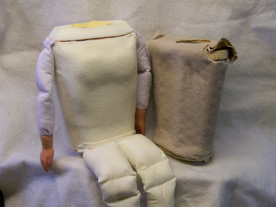

New torso only?
9/1/2009
Question: I would like to know if you sell just the upper torso for a 32" figure? I purchased a figure a while back from eBay but she looks like she is wearing football shoulder pads. I tried to remake her torso, but the way the wood was originally cut, no alterations can be made. I can reuse the arms, hands, head, and legs. I only need the part where I placed my hand in the back. The neck hole would need to be a little larger than the "Rusty" you made for me. I measured around the neck base (just before the headstick) and it measures 9 1/2". Can you help me and resolve my problem?
* * * * *
Answer: Yes, I can build a nicely contoured torso for your little gal. But I would like to have the current torso in hand so I can match the size more accurately. So I would like to ask that you send the current body to me if you want me to do the job. I'll build a new torso and move the arms and legs to the new torso. (In the photo below you can see the completed body with her new torso on the left. The original torso is on the right.)
* * * * *
Answer: Yes, I can build a nicely contoured torso for your little gal. But I would like to have the current torso in hand so I can match the size more accurately. So I would like to ask that you send the current body to me if you want me to do the job. I'll build a new torso and move the arms and legs to the new torso. (In the photo below you can see the completed body with her new torso on the left. The original torso is on the right.)
